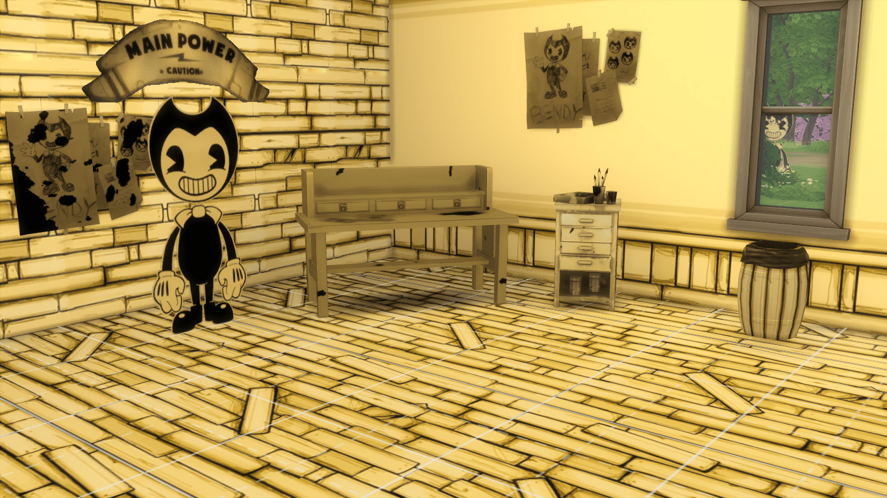
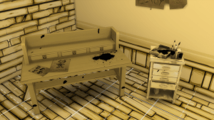

Bendy and the Ink Machine Sims 4 CC Bundle
Reenact the episodic indie horror game Bendy and the Ink Machine in your Sims game with this custom content bundle.
This bundle contains:
- One Bendy decal with two swatches
- Two wall coverings
- One floor
- One ink stained desk with Bendy sketches
- One artists storage piece
- One wall hanging featuring Bendy sketches with two swatches
- One barrel bin
- One Main Power switch sign decal
To add these items to your game, unzip the file and move it’s contents over to your mod folder in your Sims 4 files.
To place Bendy anywhere other than a wall, use the ‘Move Objects’ cheat. This can be done by holding ctrl+alt+C, then typing “bb.moveobjects on” without quotations.
To download the bundle, click the link below.